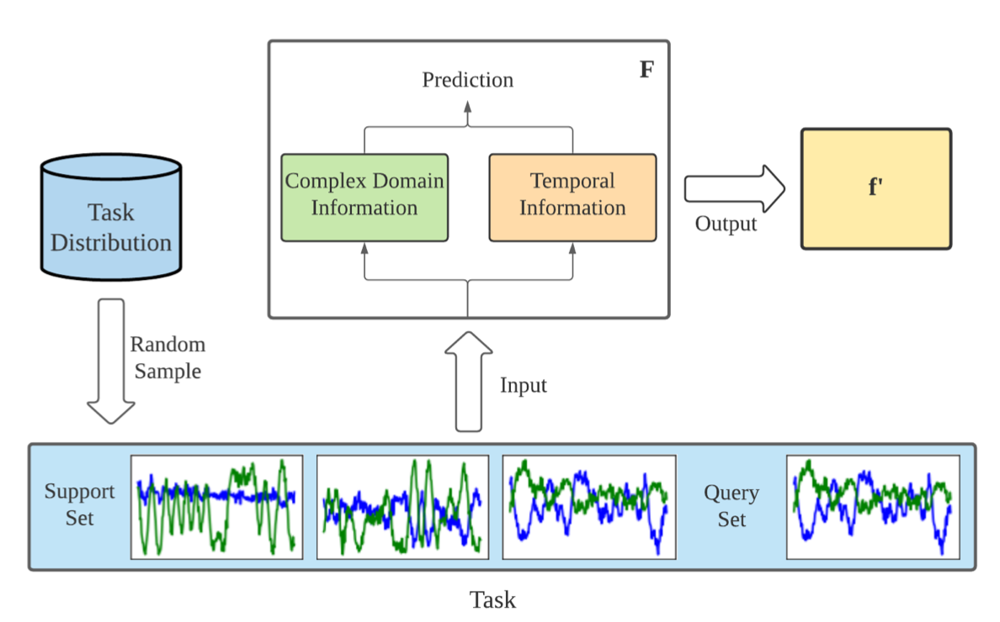

|
Ying Peng 1853287@tongji.edu.cn Bachelor Student Department of Software Engineering Tongji University E-mail / Google Scholar / Github / CV |

|
Biography
Ying Peng is senior year Bachelor student at Tongji University, Department of Software Engineering, advised by Prof. Qingjiang Shi, whose reserach field mainly includes signal processing and machine learning.She has taken an Deep Learning Framework Development Intern in Sensetime Group Limited, and the work includes operator development and model training. She is now taking an Coputer Vision Intern in SenseTime, Image Quality Algorithm Department leaded by Dr. Sijie Ren. She researches demosaic and super resolution algorithms with collegues at work. She is very interested in computer vision and deep learning, and has been reseaerching in meta learning and attention mechanism. She is devoted to finding solutions to real world problem using machine learning techniques, not only for images, but also speeches and signals. The detailed research contents can be found in her research statement.
Papers
|  |
Signal Transformer: Complex-valued Attention and Meta-Learning for Signal Recognition
|
Patents
| An analog signal recognition method based on complex neural network and attention mechanism | Inventor | PCT, 2021108854804 |
Projects
- Kaggle Research Prediction Competition:SETI Breakthrough Listen - E.T. Signal Search
- Performed data processing, model selection, training, and optimization.
- Got excellent accuracy through model ensembling and pseudo label learning. Gained silver medal in Kaggle Competition. (ranking: 34/768)
- Detection of Diabetic Retinopathy Based on Deep Learning
- Cooperation with Tongji Hospital.
- Established the model based on the Unet. Used square-weighted Kappa as loss function and other methods for optimization.
- Built a front page to form a complete system to be applicated in life.
- Real-time Collaborative Software Development Environment for Lightweight IDE
- Implemented CoVSCode as VSCode's plugin for real-time collaborative programming. (similar to shared documents, but for projects and code)
- Was selected as National Innovation Project. Won the silver award in Tongji University Internet+ Contest , and the silver award in "Challenge Cup" Entrepreneurship Plan Competition in Tongji University District.
Honors&Professional Activities
- Undergraduate Scholarship in Tongji University
- The Second Prize of WeChat Mini Program Development Competition in East China Division
- The Third Prize of "CEMEE" Electromagnetic Environment Mathematical Modeling Competition
- The Third Prize of Tongji University Physics Competition
- TOEFL: 100